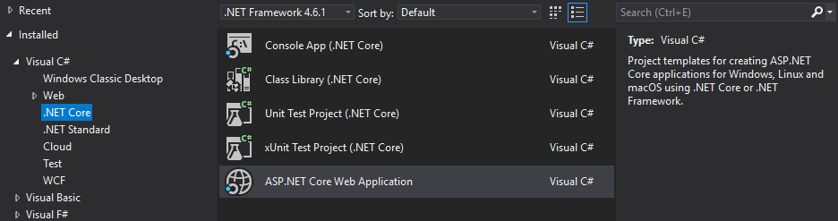
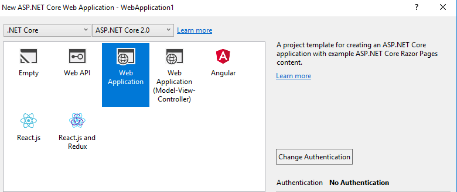
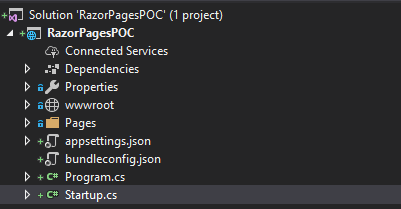

You might be familiar with C#'s razor engine from Microsoft's implementation of the MVC framework.
Razor code is typically stored in files with the .cshtml file extension. As the extensions suggests, the file will consist of a mixture of HTML and C# code. The Razor engine will then perform server side operations on this file and turn it into pure HTML.
If Razor has been around for years and is actively used in asp.net MVC then what so special about Microsoft's new "Razor pages"? Well Razor pages are Microsoft's alternative to the MVC pattern, Razor pages uses more of an MVVM pattern. This means that there is no longer a controller. Rather now you have a smart model. The idea behind razor pages is that each view should have it's own bit of logic. Controller's arguably broke the Single Responsibility Principle by controlling more than one view at a time. Razor pages should prevent you from doing this.
This new way of coding asp.net web applications came about with asp.net core v2.0.
I'm using Visual Studio 2017 with asp.net core v2.1.4. If you're using a windows machine, you can check you version of asp.net by typing dotnet --version into cmd or powershell.
Create a new project and make sure you select the ASP.NET Core Web Application project type.

Select ASP.NET Core 2.0 from the dropdown list at the top. To the left of the MVC template you will find the Web Application template. As the description explains, the template contains example code for the new ASP.NET Razor Pages using the MVVM Approach. For brevity, I will select no the No Authentication option.

Let's take a look at the Startup.cs file. You will notice that the default setup is the same as the default setup for an MVC application. We even add the MVC services to our service collection. For those who don't know the service collection is asp.net core's implementation of a simple IOC container.
public void ConfigureServices(IServiceCollection services)
{
services.AddMvc();
}
This is because Razor pages and MVC share a lot of common functionality the ultimately both work with ActionResults.
The first thing you might have noticed is that the folder structure looks simpler than the MVC folder structure. The Models, Controllers and Views folders are replaced with a single folder called Pages.

Because we don't use controllers in MVVM and our smart Models and views are doing one thing and one thing only. Microsoft decided that each page will have it's own separate model. You can see this if you expand a page that isn't a partial, like the About.cshtml page. You will notice an About.cshtml.cs file. This is where your smart model will live. Your Razor code(Your view) will live in the About.cshtml file.
Let's open our view file. You should see the following code:
@page
@model AboutModel
@{
ViewData["Title"] = "About";
}
<h2>@ViewData["Title"]</h2>
<h3>@Model.Message</h3>
<p>Use this area to provide additional information.</p>
If you're familiar with MVC and Razor this might look very familiar. We still have a @model expression to specify our model, we see that we can still use ViewData and we can access the model's properties using @Model.Message. All pretty standard stuff. In fact you can use many of the features already available to MVC and Razor in your Razor Pages application including: html helpers, tag helpers, viewbag and tempdata. Ah yes but what is that @page expression? Well as you might suspect it specifies that this is a new Razor Page and that it has a backing model, not a controller and action. we can also use this expression to specify what route needs to be taken in order to get to this page. This useful for nested folder structures in you pages directory for example the page expression for updating a client might be @page "clients/Edit/{id}". There's lots that can be done when routing, this can include values constraints, optional values and type constraints. Routing is a large topic and you can read more about it here.
Let's move on to the smart model.
using Microsoft.AspNetCore.Mvc.RazorPages;
namespace RazorPagesPOC.Pages
{
public class AboutModel : PageModel
{
public string Message { get; set; }
public void OnGet()
{
Message = "Your application description page.";
}
}
}
Once again you might notice that Razor Pages are part of the MVC namespace. Our model inherits from the PageModel Class. in MVC when our models were anemic models. However our smart model has a OnGet() method that will handle any get request to this page. Notice the signature of the handler, it takes no arguments and returns no result. by default this handler will return the page of the model. There is usually no need to pass in arguments to the handler as it uses the properties of the model. The View can alter the values of the model and the handlers will reflect that change. The Handlers can alter the model and the view will reflect that change, hence the MVVM pattern.
First I created a POCO to hold some data about a query from a client
public class CustomerQuery
{
[Required]
[EmailAddress]
[Display(Name = "Email Address")]
public string CustomerEmail { get; set; }
[Required]
[MaxLength(255)]
public string Subject { get; set; }
[Required]
[MaxLength(2000)]
public string Body { get; set; }
}
I then added the following property to my ContactModel class
[BindProperty]
public CustomerQuery CustomerQuery { get; set; }
The bind property tag allows us to access data passed to us by a post request.
I then added the following basic form to the end of my view
<h3>Send us a query</h3>
<form method="POST">
<div class="input-group">
<label asp-for="CustomerQuery.CustomerEmail">
<input asp-for="CustomerQuery.CustomerEmail" class="form-control" />
</label>
<p><span asp-validation-for="CustomerQuery.CustomerEmail" class="text-danger"></span></p>
</div>
<div class="input-group">
<label asp-for="CustomerQuery.Subject">
<input asp-for="CustomerQuery.Subject" class="form-control" />
</label>
<p><span asp-validation-for="CustomerQuery.Subject" class="text-danger"></span></p>
</div>
<div class="input-group">
<label asp-for="CustomerQuery.Body">
<textarea asp-for="CustomerQuery.Body" class="form-control">
</textarea>
</label>
<p><span asp-validation-for="CustomerQuery.Body" class="text-danger"></span></p>
</div>
<button type="submit">Send</button>
</form>
Finally I added the OnPost Handler to our ContactModel
public IActionResult OnPost()
{
if (!ModelState.IsValid)
{
return Page();
}
// call some query service here
return RedirectToPage("Contact");
}
There's a few important things to notice here.
IActionResult in the same way we would using MVC. If you have async tasks you could make use ofpublic Task<IActionResult> OnPostAsync();
OnPost method as we bind our data to the properties with the [BindProperty] attribute. You could still add parameters if you want to. If you step through the handler and look at the value of the ClientQuery property before it returns. You should be able to see the form data we entered in on the form.When we are done handling our post request, the redirect will invoke a new GET request handled by our OnGet handler. But if we wanted to show the client a message indicating we wouldn't be able to at the moment as our binded properties are empty. Luckily we have [TempData] to assist us. I've edited our ContactModel like so:
public class ContactModel : PageModel
{
[TempData]
public string Message { get; set; }
[BindProperty]
public CustomerQuery CustomerQuery { get; set; }
public IActionResult OnPost()
{
if (!ModelState.IsValid)
{
return Page();
}
// call some query service here
Message = "Your query has been submitted. Someone will contact you shortly.";
return RedirectToPage("Contact");
}
}
[TempData] attribute to the Message propertyOnGet handlerOnPost handlerIf we POST a valid client query form now, we will see our message appear on the screen. This is because temp data will persist until it is read again. This means if you refresh the page i.e. perform another GET request. The message will disappear.
Well that's the basics of pages. There is a ton on features not mentioned in the post. If you are thinking about using razor pages I suggest you read the starter documentation. There's also an excellent talk on the subject by Damian Edwards.